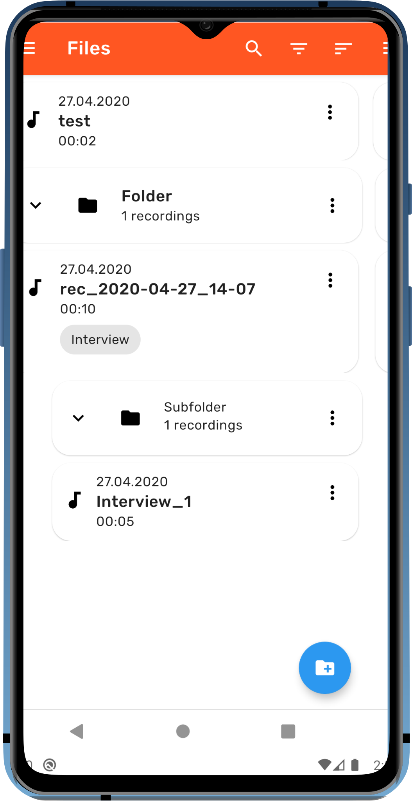

Record
- Optimized for spoken language
- Start, pause and resume recordings
- Highlight important points with markers

Organize
- Keep files organized through labels
- Create customizable folder structures
- Search, filter and sort recordings
Playback
- Listen to recordings for transcribtion
- Jump right to marked points
- Skip through the recording for faster analysis
Edit
- Cut recordings to remove unneeded parts
- Add and edit marks and labels
- Search, filter and sort recordings
Customize
- Customize markers and labels
- Adjust storage options
- Choose color scheme (light or dark)